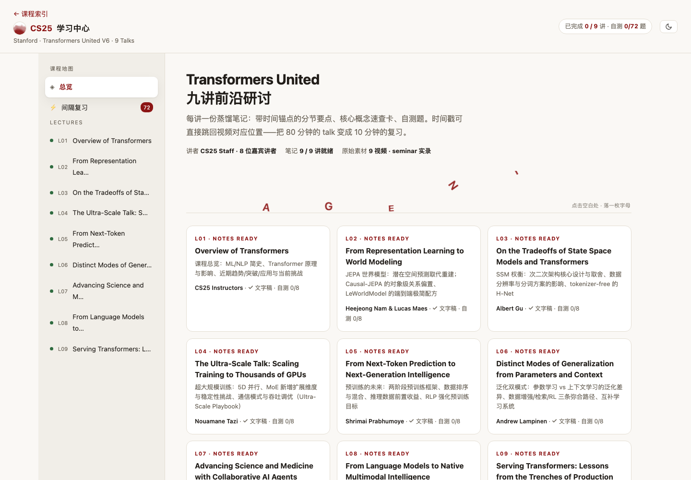
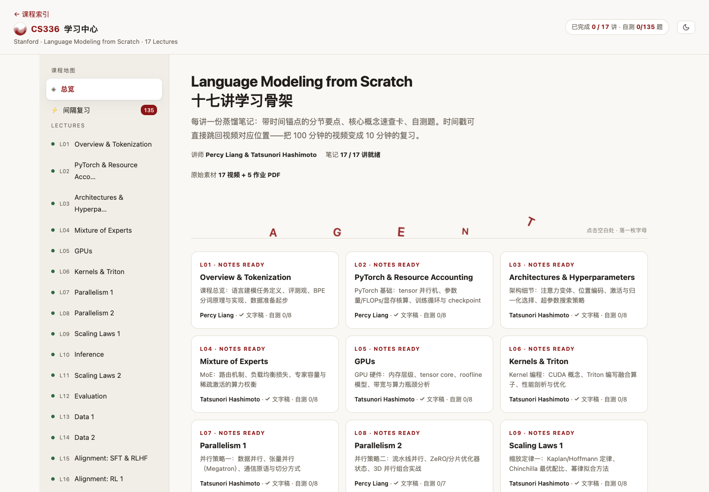
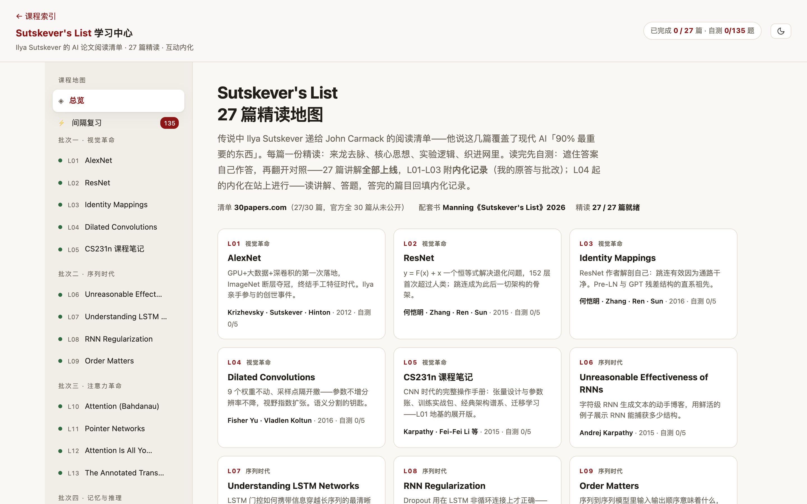
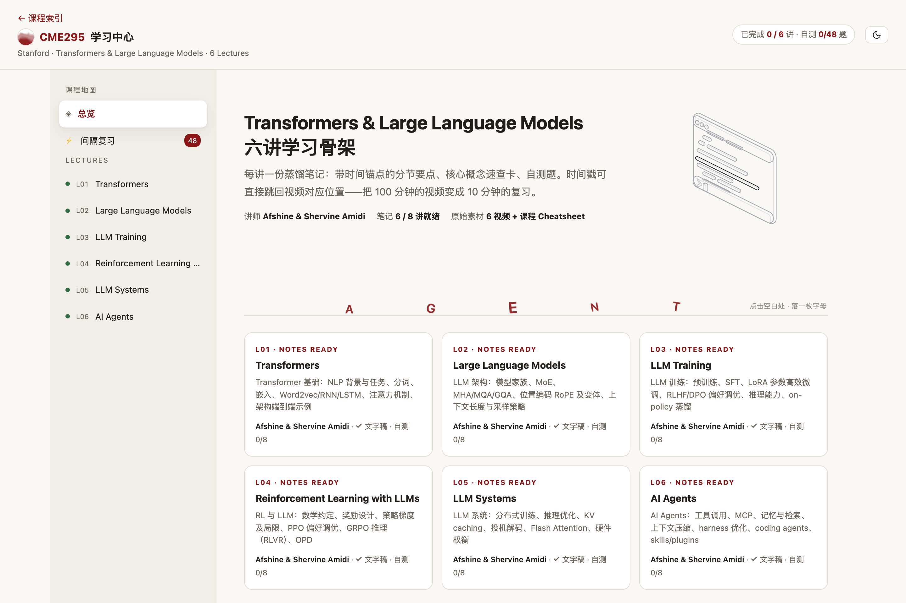
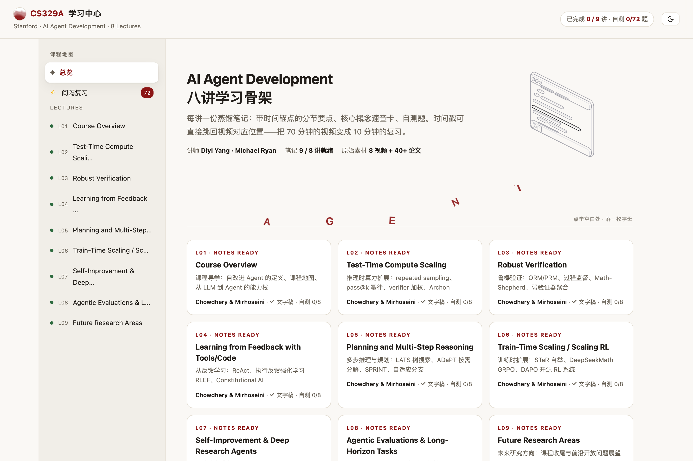
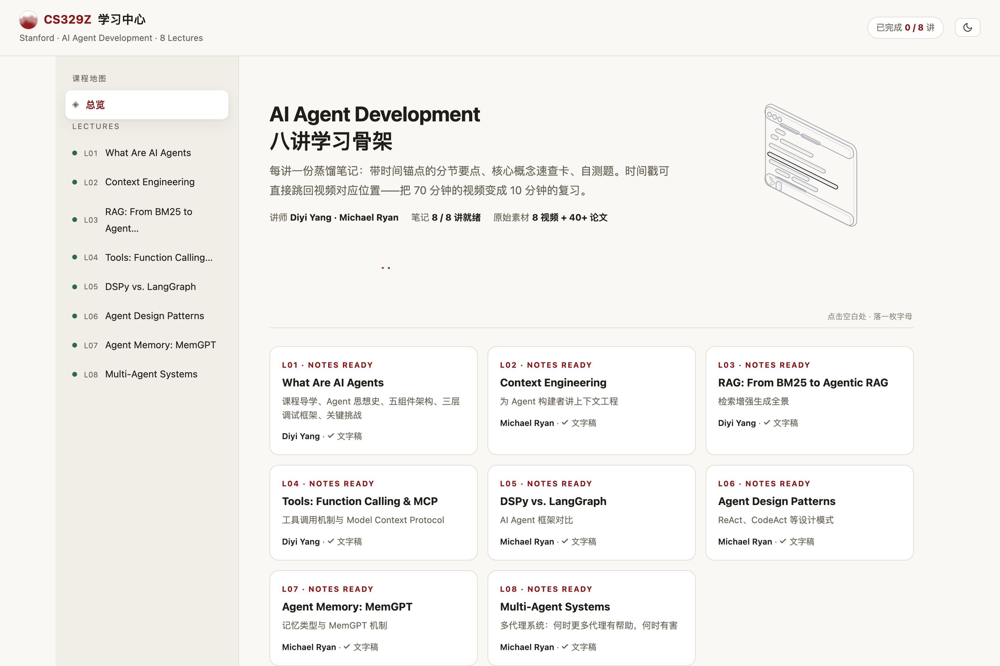

自学课程的交互学习中心:蒸馏笔记 · 时间戳 seek 视频 · 论文库 · 自测与间隔复习。每门课一个子目录，进入即学。

九讲前沿研讨:JEPA 世界模型、SSM 权衡与 H-Net(Albert Gu)、5D 超大规模训练(HF)、预训练未来与 RLP(Mistral)、参数 vs 上下文泛化(Anthropic)、AI co-scientist(DeepMind)、原生多模态(Thinking Machines)、生产推理(Modal)。

从零造语言模型:分词与资源核算、架构与超参、MoE、GPU/Kernel(Triton)、三维并行、缩放定律、推理优化、预训练数据、评测、对齐(SFT/RLHF/PPO/GRPO/R1)。

Ilya 递给 John Carmack 的 AI 论文清单:每篇一份精读(来龙去脉/核心思想/实验逻辑/织进网),读后自测、站内间隔复习，已学篇目附内化记录(原答与批改)。27 篇讲解全部上线。

Transformer 与 LLM 全景:架构与注意力、MoE/RoPE、训练与偏好调优(RLHF/DPO/GRPO)、LLM 系统(Flash Attention/KV cache/投机解码)、AI Agents(MCP/工具调用/记忆)。

自我改进智能体:测试时算力、鲁棒验证、反馈学习、规划与多步推理、Train-Time Scaling RL、深度研究 Agent、Agentic 评估。

AI Agent 开发实战:讲义逐课转录、配套论文库、Anki 式间隔复习、音频讲解管线，附单文件分享构建。